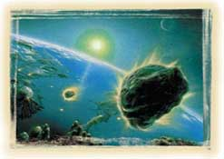
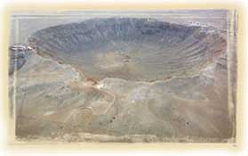
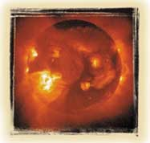
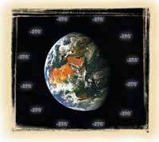
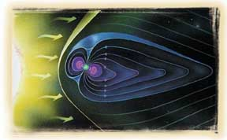

KORUNMUÞ TAVAN
Kuran'da Allah, gökyüzünün ilginç bir özelliðine þöyle dikkat çeker:
“Gökyüzünü
korunmuþ bir tavan kýldýk;
onlar
ise bunun ayetlerinden yüz çeviriyorlar. „
(Enbiya Suresi, 32)
Ayette belirtilen gökyüzünün bu özelliði, 20. yüzyýldaki bilimsel araþtýrmalarla kanýtlanmýþtýr.
Yerküremizi çepeçevre kuþatan atmosfer, canlýlýðýn devamý için son derece hayati iþlevleri yerine getirir. Dünyaya doðru yaklaþan irili ufaklý pek çok gök taþýný eriterek yok eder ve bunlarýn yeryüzüne düþerek canlýlara büyük zararlar vermesini engeller.
Atmosfer, bunun yanýsýra, uzaydan gelen ve canlýlar için zararlý olan ýþýnlarý da filtre eder. Ýþin ilginç olan yaný, atmosferin sadece zararsýz orandaki ýþýnlarý, yani görünür ýþýk, kýzýl ötesi ýþýnlar ve radyo dalgalarýný geçirmesidir. Bunlarýn tümü yaþam için gerekli ýþýnlardýr. Örneðin atmosfer tarafýndan belirli oranda geçmesine izin verilen ultraviyole ýþýnlarý, bitkilerin fotosentez yapmalarý ve dolayýsýyla tüm canlýlarýn hayatta kalmalarý açýsýndan büyük önem taþýr. Güneþ tarafýndan yayýlan þiddetli ultraviyole ýþýnlarýnýn büyük bölümü, atmosferin ozon tabakasýnda süzülür ve Dünya yüzeyine yaþam için gerekli olan az bir kýsmý ulaþýr.
Atmosferin
koruyucu özelliði bunlarla da kalmaz. Dünya, uzayýn ortalama eksi 270 derecelik
dondurucu soðuðundan yine atmosfer sayesinde korunur.
| Atmosfer, sadece canlýlar için gerekli olan ýþýnlarýn yeryüzüne geçmesine izin verir. Örneðin bu ýþýnlardan ultraviyole ýþýnlarý belirli oranlarda bize ulaþýr. Bu oran bitkilerin fotosentez yapmalarý ve dolayýsýyla tüm canlýlarýn hayatta kalmasý için en uygun ölçüye sahiptir. | |
 Bu temsili resimde Dünya'ya çarpmak üzere olan gök taþlarý görülmektedir. Uzayda dolaþan gök taþlarý Dünyamýz için çok önemli bir tehlike oluþturabilirdi. Ancak Allah kusursuz yaratýþý ile atmosferi koruyucu bir tavan kýlmýþtýr. Bu özel koruma sayesinde gök taþlarýnýn büyük çoðunluðu atmosferde parçalandýðý için Dünya'ya zarar vermez. |
 Gökyüzünü seyreden insanlarýn çoðunun aklýna atmosferin koruyucu yapýsý gelmez. Bu yapý olmasa Dünya'nýn nasýl bir yer olacaðýný da insanlar çoðu zaman düþünmez. Yukarýdaki resimde Dünya'ya düþen bir gök taþýnýn ABD Arizona'da açtýðý dev çukur görülmektedir. Eðer atmosfer olmasaydý bu gök taþlarýnýn milyonlarcasý dünya yüzeyine düþer ve gezegen yaþanýlmaz bir hale gelirdi. Ancak atmosferin koruyucu özelliði sayesindedir ki, Dünya'daki canlýlar güven içinde yaþamlarýný sürdürürler. Bu, elbette Allah'ýn insanlar üzerindeki bir korumasýdýr ve Kuran'da haber verilmiþ bir mucizedir. |
Van Allen Kuþaklarý'nýn yaþamýmýz açýsýndan önemini Dr. Hugh Ross þöyle anlatmaktadýr:
Dünya, Güneþ Sistemi'ndeki gezegenler arasýnda en yüksek yoðunluða sahiptir. Bu geniþ nikel-demir çekirdeði büyük bir manyetik alandan sorumludur. Bu manyetik alan Van Allen radyasyon koruyucu tabakasýný meydana getirir. Bu tabaka yeryüzünü radyasyon bombardýmanýndan korur. Eðer bu koruyucu tabaka olmasaydý Dünya'da hayat mümkün olmazdý. Manyetik alaný olan ve kayalýk bölgelerden oluþan diðer tek gezegen Merkür'dür. Fakat bu manyetik alanýn gücü Dünya'nýnkinden 100 kat daha azdýr. Van-Allen radyasyon koruyucu tabakasý Dünya'ya özeldir.1
Geçtiðimiz yýllarda tespit edilen bir parlamada açýða çýkan enerjinin, Hiroþima'ya atýlanýn benzeri 100 milyar atom bombasýna eþ deðer olduðu hesaplanmýþtýr. Parlamadan 58 saat sonra pusulalarýn ibrelerinde aþýrý hareketler gözlenmiþ, Dünya atmosferinin 250 km üstünde sýcaklýk sýçrama yapýp 2500° C'ye yükselmiþtir.
Kýsacasý, Dünya'nýn üzerinde, kendisini sarýp kuþatan ve dýþ tehlikelere karþý koruyan mükemmel bir sistem iþler. Ýþte Dünya göðünün bu koruyucu kalkan özelliði yüzyýllar öncesinden Kuran'da bizlere Allah tarafýndan bildirilmiþtir.
 |
 |
 |
| Güneþ parlamasýnda açýða çýkan enerji insan aklýnýn anlamakta zorlanacaðý kadar þiddetlidir: Tek bir parlama, Hiroþima'ya atýlan 100 milyar tane atom bombasýna eþ deðerdir. Dünya, bu yýkýcý enerjiden atmosfer ve Van Allen Kuþaklarý'yla korunur. | Canlý yaþamý için son derece elveriþli olan Dünya'dan atmosferin dýþýna, yani uzaya çýkýldýðýnda dondurucu bir soðukla karþýlaþýlýr. Dünya, uzayýn ortalama -270 derecelik dondurucu soðuðundan yine atmosferi sayesinde korunur. | Dünya'nýn manyetik alanýnýn oluþturduðu manyetosfer tabakasý, yeryüzünü gök taþlarýndan, zararlý kozmik ýþýn ve parçacýklardan koruyan bir kalkan gibidir. Yukarýdaki resimde Van Allen Kuþaklarý adý da verilen bu manyetosfer tabakasý görülmektedir. Dünya'nýn on binlerce kilometre uzaðýndaki bu kuþaklar, yeryüzündeki canlýlarý uzaydan gelebilecek öldürücü enerjiden korumaktadýr. |